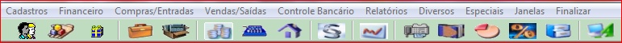

Menu Principal |
  
|
Menu Principal |
|
Basicamente, foram usados dois tipos de menus: um que é apresentado na horizontal e permanece fixo na parte superior do vídeo, figura 1, usado como Menu Principal para selecionar os grandes módulos. Ao clicar em qualquer uma das opções do Menu principal é aberto outro menu em janelas com as opções na vertical "Top Down" (de cima para baixo), todos os outros menus são deste tipo.

Figura 1 - Menu Principal
Outro tipo de menu também disponível é o do tipo "Tree" (árvore), figura 2. Para acioná-lo pressione <Alt> e a letra indicada no Menu.

Cada uma destas entradas foi descrita com mais detalhes em um item específico, que você poderá ler clicando sobre o título. Observando que esta é uma breve descrição para que você tenha uma visão geral do sistema. Navegando pelo índice principal você poderá ver uma descrição completa de cada um dos módulos do sistema.
Na relação a seguir você terá uma visão das entradas do menu principal:
➢Cadastro. Nesta entrada se tem acesso a todos os cadastros e tabelas utilizadas nos sistemas.
➢Financeiro. São todas as operações realizadas na área financeira e cobrança.Lotes de Cartão, Cadastros de Cheque, Remessa e Retorno Bancario
➢Compras/Entradas. Nesta entrada você tem acesso a todas as operações que movimento o estoque e Compras.
➢Vendas/Saídas. Nesta entrada você tem acesso a todas as operações de Vendas, Conferencia de Caixa, Fechamento de Comissão.
➢Controle Bancário. Permite efetuar os lançamentos em contas correntes de banco ou caixa interno.
➢Relatórios. É a porta para execução dos relatórios e documentos padrões e a rotina de listar relatórios prontos.
➢Diversos. Possuí rotinas complementares, que podem ser executadas a qualquer momento para alguma atividade específica.
➢Especiais Concentram as rotinas para configuração do sistema e atribuição dos parâmetros genéricos de cada sistema.
Figura 2 - Menu tipo "Tree" (árvore)